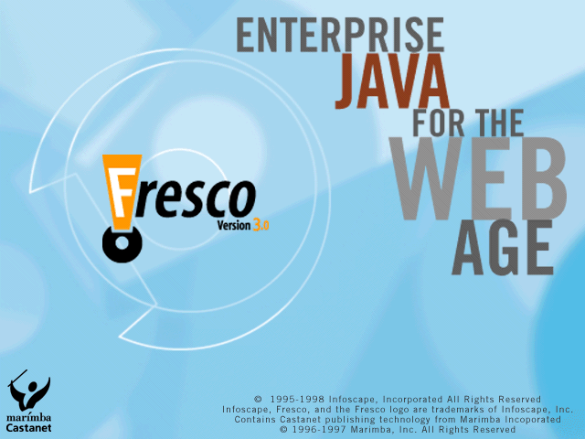
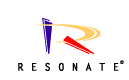
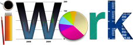

This is chronological, from first to last. If you want most-recent first, scroll to the end.
Beginnings
Working life began at 12, when my parents put me to work cleaning up the
lumberyard for $2/hour. Eventually I learned to do most jobs at the mill.
I believe my parents' intention was twofold: to teach me the value of money,
and the value of a university education. From the latter standpoint, my
employment at Darfield Building Products was a great success - in
university, when my interest in studying occasionally flagged, it was the
thought of stacking two-by-sixes, shovelling sawdust, and "pulling on the
greenchain" that kept me afloat.
Between graduating high school and starting university, I decided that
having a job outside the family business would do me some good. To that
end, I put $50 in my wallet and jumped on my motorcycle, and rode to the
Yukon. I landed a job there, operating a Patrick 988 loader 12 hours a day.
Every day. My job was to move tailings - ordinary gravel, rocks and dirt -
from the outflow of a placer-type gold-mining operation. In the end it was
more of an adventure than a job, as the inefficiencies and egos of the place
ran rampant. It was here that I first began to understand the saying "If
all you have is a hammer, everything looks like a nail."
When I was searching for my first summer jobs in university, I left these
experiences on my resume because I didn't have any others. Now that I have
plenty of former employment that is relative to my chosen carreer to show
off, I still leave my first jobs on there because I truly believe that those
early experiences in a production-oriented environment were what formed my
notion of a work ethic.
Notwithstanding all of that, however, I was happy to reach a point in my
carreer at which I felt that I'd left resource extraction and refinement
behind me. All I had to do was find a job.
My first job in the computer industry was as a lab attendant and helpdesk
person. This was a lowly job that required no real experience; I guess the
theory was that you didn't need any to provide support to Macintosh
users. From that standpoint, I was singularly qualified.
This job proved to be somewhat prophetic, as I have found every job I have
performed since then, even pure software engineering, to be a variation on
the theme of the communication of technical things to (sometimes
non-technical) people. In fact, the whole art of UI design is nothing more
than this - designing paradigms and laying out interfaces such that they are
easy to comprehend and use is an act of communication by itself.
The NeXT Years
With the force of real on-the-job experience behind me (and little idea that
half of the undergraduate Computer Science student body had precisely the
same job on their resume) I set out to find a summer job. Luckily, a friend
and I had been the most obnoxious students of a professor, Vincent Manis,
who was kind enough to employ us both for the summer. While it was probably
true that we were ahead of our classmates in coding experience, I believe he
wrongly confused loudness and contention with brilliance and knowledge.
Nevertheless, I owe a dept of gratitude to him, as he gave me both my first
software engineering job and simultaneously introduced me to the NextStep
Operating System, which was to dominate my experience for the next five
years.
This first coding job involved writing a simple graphics interface for the
undergraduage Scheme lab. For reasons still unclear to me, the Department
had decided to purchase a whole lab of Next machines, which were then a very
new technology, and teach the Scheme language (a variant of LISP) on them.
This was somewhat ill-fitting, but worked acceptably so long as you weren't
trying to do anything real, like a GUI. What was required was a simple set
of routines, callable from Scheme, that would allow a student to open a
window, and do simple drawing on it.
Naturally, I goofed off for most of the summer and constructed elaborate
designs that were doomed to failure for various reasons, mostly the
inexperience of the designer. In the end, a week before courses were to
begin, fueled by much Jolt cola and many Mars bars, I produced a prototype
from scratch which worked. Such is the life of a college student.
In the process of doing this work, my boss Vince Manis let me know that NeXT
Inc. was obliged to hire two "Campus Consultants" to support the NeXT lab
and other NeXT users on campus. They had already hired one, and based on my
work, he reccomended me to be the other. Unfortunately, there was nobody to
reccomend me to, as the local NeXT Computer representative had just moved
on. Eventually, a new sales rep was hired, and I hounded him. Scott
Anderson must be some kind of a saint, because I know for a fact that I
called him every other day for a couple of months, eventually pestering my
way into the job. I owe him a debt of gratitude to this day for having put
up with what must have seemed to him to be a bizarre and over-enthusiastic
job-seeker.
The role of Campus Consultant was, I think, a carryover of Apple culture to
NeXT, and one that was to prove very valuable for NeXT, as many CCs later
became Software Engineers, System Engineers, trainers, marketers, and
salespeople for NeXT.
As a CC, my job was to keep the NeXT lab in relatively good running order,
help out at the Bookstore with sales of NeXT boxes, and support individual
users on campus. Now, in 1990, when the first NeXT cubes came out, the
typical low-end machine was a 1-foot by 1-foot by 1-foot cube, containing a
motherboard running an M68030, usually 8 or 16 MB of RAM, an Optical Disk
Drive, and often no hard drive whatsoever. On this was running BSD 4.3 Unix
on a Mach kernel. It costed $10,000. The big flaw in this strategy was
that the OD was s-l-o-w. I mean, really, really, slow, like 10-minute login
times slow. So one of the first things I learned, which was to serve me
well in years to come, was that lots of times, you can't solve someone's
problems. Much as I wanted to, I couldn't help the user of an OD-only
system get better performance - all he or she could do to improve
performance to the 'acceptable' level was to buy a SCSI hard drive, and
increase the amount of RAM in the machine (which was very expensive then).
To get really good performance, NeXT users were going to have to wait a
couple of years for better hardware and software.
Fortunately for NeXT, a lot of initial purchasers were what the industry
calls "early adopters". Generally, these people were technology enthusiasts
who were willing to buy into the concept with real dollars (quite a lot of
them) and wait for it to be refined to the point that it would be actually
useful to them - at which point, they would have to buy it all over again.
Early Adopters seem more than happy to do this simply for the cachet of the
"next big thing" and to be part of the revolution, so I was fortunately not
castigated too much for the shortcomings of what was a very promising
technology. Perhaps, though, it was the unfortunate bendable reality of
computer marketing and sales that spurred me in a more technical direction.
The work as a CC helped me get two other summer and part-time jobs doing
NeXT coding and systems administration, for J. Hills Radiology, and the MIS
lab in the UBC Commerce Department. These got me further and further hooked
on NextStep, which was really an aggregate of Operating System, Operating
Environment, and Development Environment.
Four years in school found me three courses short of a degree and planning
to return school to complete it. Instead I went to work at NeXT, Inc. in
Redwood City, as a Developer Support person. At this point in my carreer,
being offered real work in an innovative company in Silicon Valley made it a
no-contest decision to put my degree on hold. And it was a very good
decision. Developer Support gave me an opportunity to learn an amazing
breadth of knowledge. I supported customers troubleshooting early ISDN
installations, debugging UNIX system calls, doing systems administration,
using sound and graphics libraries, development tools, compilers, databases
and more. Everything was relevant and nothing was off-limits - a great job
to have as your first in the industry. While the job was very general, I
did have time to specialize in some things - I was interested in development
environments, and made myself an expert on the application framework
(AppKit) and the user-interface layout and construction tool
(InterfaceBuilder). To one degree or another, I've been working on GUI and
development tools ever since.
After a time, I moved on to a more senior position in developer support. I
started devoting most of my time to a smaller set of customers that we
supported more intensively - what was called Premium Developer Support.
This was an eye-opener for me; I was wearing a suit and visiting customers
on-site, filling in for trainers, and trying to communicate without creating
friction with engineers 20 years my senior. Maintaining a professional
demeanor in person is much harder than it is on the phone. I found it
challenging and very rewarding.
Developer Training in particular represented the hardest and best customer
interactions I had. It is a roller coaster ride between the agony and
frustration you feel when despite your best efforts, a student just doesn't
"get it", and the thrill of victory and common understanding that comes from
teaching someone an important and elegant concept. And, in all cases,
maintaining composure and representing your company in a professional
manner. A few times, I was fortunate enough to speak in front of larger
audiences at some of NeXT's trade shows as well, and found the act of public
speaking was much the same - exhilirating, challenging, fun, and rewarding.
While filling this great multi-functional role, I also came to the
realization that it was important to me to finish my degree. I was lucky
enough to have Scott Mattoon as my manager at the time. In fact, I had
seven managers in two years at NeXT (despite being a wonderful place to
learn, NeXT did have it's shortcomings). But Scott was among the best of
managers - he was good enough to help me arrange a system whereby I returned
to school and continued to adequately support my customers. Getting my
degree was a matter of settling unfinished business, and fully qualifying
myself for more technical jobs in the future.
I enjoyed filling in as a trainer a lot and very nearly took a job doing
that, but, with difficulty, decided that I wanted to pursue software
development with more technical depth. Although Developer Support had given
me a look at nearly every sort of coding problem in the NeXT world, there
were many avenues of knowledge that I didn't have the time to pursue
significantly. In short, I was a jack-of-all-trades; I wanted to be master
of *something*.
After evaluating my options, and certainly influenced somewhat by a love
(and lack) of money, I elected to do consulting work with Vanguard, a
Chicago-based company, one of whose founders I was acquainted with. At this
point in history (late 1992) even a dead river-otter could have found a job
doing NextStep consulting, so I was a shoe-in. I moved to Chicago and began
working for Swissbank, and commuting every two weeks to Seattle, where I
worked for McCaw Cellular (later to become AT&T Wireless). AT&T was my
customer from my developer support days, and I maintained that good
relationship into my tenure at Vanguard and beyond.
Although Vanguard was a great company, it was structured rather too much in
favor of the employees - to be honest, I think the founders, Tyler Gingrich
and Takis Mercouris, didn't take enough out for themselves, so there was no
real reason for Vanguard to continue. So it was being shut down. Also,
Vanguard was in Chicago, which is *cold*, even for someone who grew up in
the mountains in Canada. So, with this confluence of factors, I moved to
Seattle only four months later and worked with McCaw as my only customer, at
this time working through another consulting company called FOJ, another
great group of people. In fact, most of that year consulting was spent at
McCaw in Seattle, and the continuity of it was such that I still think of it
as one continuous, one-year consulting job.
|
McCaw Cellular Communications, later to become AT&T Wireless Services, was
implementing several applications as part of their AXIS project. The area
that I worked on was called the McCaw Application Framework. This was a
dream-team of framework developers - we had a small, elite group of UI,
database, network, and application wizards, and we all worked out tails off.
For a consulting job, it was a very tight-knit team, and we did some amazing
things. This was my first real exposure to Object-Relational mapping and
coding to databases in general, and I learned a lot. We were using NeXT's
EOF 1.0 product, and modifying it heavily. While I was there I came to be
responsible for the entire GUI framework, and several other subsystems,
including validation and a Security management application. It was, as we
said at NeXT (though I'm sure it was first said much earlier) "like drinking
from a firehose". I learned a lot. After logging a 300 hour month, I
decided that, much as I liked it, the consulting life was too much work and
not enough play. It was a good breakpoint in the project's life cycle, so I
began looking. | |
|
Sun and NeXT had come to a seemingly forward-thinking agreement; for a sum
(purported to be about $20 million dollars) and other considerations, NeXT
and Sun would re-define the API's for their NextStep operating environment
in an OS-independent way, publish this as a new open specification
"OpenStep", and port a new, OpenStep-compliant version of NextStep to work
on top of the Solaris operating system. This seemed full of promise - NeXT
had failed to make significant impact on SUN's traditional markets and
needed to redefine itself as a non-proprietary supporter of open standards
in order to compete; SUN needed a better desktop than CDE.
| |
Development at SUN on OpenStep was begun, and it was more than a year later
I joined to help with AppKit and Mail issues. I went to SUN because I
believed that OpenStep was the best shot of survival that NextStep, the
original technology that had inspired me, had, and I felt that I could learn
there. Unfortunately, OpenStep quickly languished under the desktop
politics of SUN, which had after all managed to kill the forward-thinking
NEWS desktop in favor of CDE, a bloated and slow warthog of a desktop if
there ever was one. I did learn a lot there. Technically, I learned a lot
about Mail formats, sound library internals, and the internal mechanics of
the Application Kit. These were also the dog-days of Java, and I spent as
much spare time as I could learning this, as it became clear that NextStep
and Objective-C would slowly but surely dry up and be forgotten.
Personally, I learned what it was like to operate in a large organization.
In particular I learned the valuable lesson that large companies generate
large politics. And that politics is the enemy of good engineering. Ok,
it's probably inevitable, but I don't have to like it.
Moving on to Java
| Fortunately, there's always good engineering happening somewhere. Fresh
from a somewhat mixed experience with a large company, I elected to work for
a much smaller one. Infoscape represented the confluence of many technical
goals for me - I wanted to work at a small company, in Java, with databases,
GUI, and a great UI-layout tool. Infoscape was and is all of these things
and more. In the 16 months I was at Infoscape, I worked on all parts of the
system, and learned a lot about good and bad design, and the new and
different trade-offs that web-delivery of enterprise applications
entails. Primary lessons? Good technology won't succeed on it's own
merits. Market focus is more important than the latest cool feature.
Listen to what your customers are saying. Look at what your
competition is doing. Good design is worth the effort. Teamwork
happens at your desk, not in meetings. Leadership has to be honest
to be effective. |
|  |
The big upside about working for a small company (aside from the pile of
stock options) is the degree to which one person can affect the product.
The downside of small companies is that they are prone to sudden direction
change and are more than usually vulnerable to marketing and sales mistakes.
After 16 months, Infoscape's direction has turned more toward custom
database application delivery rather than tool and framework development.
So, with some misgivings, I decided to move on. |
|
Initially, moving on meant a move to a temporary consulting job at
Pacific Data Images (PDI). PDI is an Infoscape customer I helped to sell to
while I was still at Infoscape, and is the maker of the films Antz,
Schrek, and Schrek 2. I was able to help PDI with their film production
tracking applications, which used infoscape technology that I had helped
develop, and to implement a framework
specific to their application needs, which added new functionality not found
in the original Fresco product, as well as fixing and working around bugs
that are showstoppers for PDI. PDI, for their part, was an incredibly
creative place with really nice people, and I was sorry to leave, but
leave I did - I didn't want to linger over what I was already regarding
as a dead technology. |
| Oracle made me a compelling offer in terms of intangibles... specifically, I was impressed with the quality of engineers on the Bali team (which is part of the Tools division). The Bali team develops a set of lightweight UI components (both AWT and Swing based) for internal use by application teams elsewhere in the company. The engineers there are top-notch, and I learned a lot. The downsides of a large company are still there however - institutional resistance to new ways of doing things, corporate HR department, stifling completion requirements. |
I should explain that last bit - Oracle tries to localize all of their products to 20+ languages including right-to-left languanges, and recently, due to the Americans With Disabilities Act (ADA), is trying to ship products that are handicap-accessible. These are worthwhile efforts. They do, however, slow down innovation.
In the end I received an offer I couldn't refuse from a promising startup. I had mixed feelings leaving Oracle, both because I was leaving behind some great people (including one great manager, a rarity in this business) and because Oracle was an otherwise accomodating place to work - results-oriented, great gym, matching 401K, ESPP, stock options. But I came to the conclusion that I needed a more stimulating environment.
Resonate was a young company in an entirely different sector of the industry than I had worked in before. Not a small company, and not a big public one either, it offered the right "sweet spot" of innovation, new technologies, and likely return combined with less risk than a ground-floor startup might have. The biggest downside was the San Francisco - Sunnyvale commute.
Resonate offered many interesting design challenges and an opportunity to learn CORBA (Orbacus) and XML. In August of 2000 we went public at $20. By October we were spiking at $50 and things were looking pretty good. By January we were at $6 and I sold in February at $4. Easy come, easy go.
For about 4 months, I developed my own project, AreaJ. AreaJ is a digital-imaging web application that is written in Perl, on Debian Linux, for Apache/mod_perl. I set out to do this mostly to broaden my knowledge of the open-source world, and to learn perl (turns out it really is a programming language), as well as to implement something purely for myself. AreaJ was a personal success, in that I broadened my knowledge of the open-source world and re-grounded myself in my areas of strength; solid design and straightforward implementations that work reliably and well.
| Since July of 2001, I've worked for Apple's Internet Services Development division. It has been without a doubt the best work experience I've had since working at NeXT. As a company with a definite sense of mission and strong esthetic values, Apple has been a breath of fresh air after the get-rich-quick internet schemes of the 1990's. |
Immediately upon arriving at Apple, I was tasked with the commercialization of Apple's existing "iTools" service suite. The result of about 10 months of effort was '.Mac', a subscription-based service with expanded capabilities for .Mac. My area of specialization was in the design and implementation of most of the commerce model; particularly integration with our credit card authorization service. I was also responsible for architecture and implementation of the signup application, which involved multifarious signup pathways, credit card authorization, activation key generation and validation, and ultimate transmittal of subscription and authorization data to SAP. ".Mac" was successful well beyond our expectations, and generated literally millions of dollars in revenue for Apple within the first month - all of which flowed through my e-commerce code. Good thing we got that one right the first time!
After the success of .Mac, I was recruited to be the first full-time developer to work on the iTunes Music Store server suite (Project Jingle, delivered April 28, 2003). iTMS is without doubt the best project I've ever been priviledged to work on. The server applications were written by myself and 6 other engineers in about 10 months. This includes an entire asset-management and versioning system, a brand new search engine, content-importation implementations for the big 5 major labels, a content-authoring framework and tools, a complete commerce implementation (my job) including risk management and debt recovery, as well as asynchronous integration with the back-end financial system (SAP). And much more. We were able to accomplish all this because of committed executives with vision, grounded and professional senior engineers, pragmatic feature and schedule management, and a shared desire to implement something better. Which, in a sentence, is probably the driving force behind Apple as a company.
| At this point, after 11 years spent mostly in silicon valley, my wife-to-be and I decided to move to Vancouver BC. Aside from the cheaper real estate, it was an opportunity to not be so immersed in the technology culture. Truthfully, I had no expectations of continuing to work for Apple for any length of time, but I pitched it, and to my great benefit my bosses at Apple gave me a shot to make it work. Which it did - turns out, for many tasks, one can be a lot more productive when one isn't on site. I have worked remotely for Apple ever since. |
| After the initial implementation of the music store, we added allowances and gift certificates in October of 2003, at the same time we added Windows support. The next major target was to make the store available in the major European markets - Great Britain, Germany, and France (Project Asterix, delivered June 15, 2004). Because we had spent considerable effort on internationalization during the design of the first store, we were able to deliver an expansion into 10 more European countries - Austria, Belgium, Finland, Greece, Ireland, Italy, Luxembourg, Netherlands, Portugal, and Spain (Project Obelix, delivered October 26, 2004). Canada on December 1, 2004. Along the way were many smaller but important features - a variety of different ways of issuing and accounting for free product codes, a number of new payment methods, special U2 discounts, you name it. |
| In the summer of 2006, I began to feel like e-commerce was becoming repetitive; I decided to branch out. Serendipity took a hand; my old boss from .Mac days was now managing a small team of engineers doing iTunesU. iTunesU is a country cousin of the iTunes Store; the main idea is to make higher-education media content available to students and professors and to provide easy tools for metadata management and publishing for those institutions. I deeply enjoyed my time working on iTunesU; contributing to the higher-education space is personally rewarding, and the technology and design challenges were refreshingly different from e-commerce. |
| By the summer of 2007, I was finding that engineering challenges were less entertaining than they once were... I was looking for something different. Enter, management. I've always had a love-hate relationship with the whole concept of management - on the one hand, it is the necessary disambiguator and force-multiplier that enables all engineering of any significant size to come to fruition. On the other hand, it's a constant distraction from the real work of getting things done. Still, I believed that to the extent that I had been the beneficiary of some extremely forgiving managers that had consistently given me room to grow and improve, I felt that so long as I followed their example, and treated my job as an opportunity to enable some extremely talented individuals (while still providing the needed direction to get the job done) I couldn't go too far wrong.
Hence, I quickly found myself with headcount and an exciting new secret project. Which got excitedly cancelled after about 3 months.
That was my first lesson as a manager... exciting new secret projects are all well and fine, but having consistent work that needs doing, that can provide a base for more speculative, cutting-edge work - that's the bread-and-butter of a successful team. Certainly of a successful team that is a thousand miles away from headquarters. Following that, our bread-and-butter became the iTunes Store's internal customer support application as well as much of the effort to cambat fraud in the store. This was a partial return to the world of e-commerce, but more importantly, it was work that badly needed doing and which benefitted real users by solving problems for real people, and which shipped regularly to do so. |
|  | In March 2013, I returned to work after a 9 month parental leave. Becoming a parent will sharpen your focus; I decided that being a manager on an 11-year-old project no longer sufficiently engaged my interest or challenged my abilities as a technologist. Really what I'd been wanting to do ever since the iOS SDK first came out was get back to writing code in the Objective-C client space, and see what mobile was all about. Fortunately I was able to stay at Apple to do this; I spent the next year working on the iWork productivity apps for iOS and OSX. I found it both challenging and important work. In the end, I found that the opportunity to spend time with my son while he was still young was too attractive to continue working at a job where I really felt like I'd accomplished all I'd ever wanted to. |
| From early 2015 to late 2016, I worked as a general contractor, building my own house. It's a fascinating thing to do, offering completely different challenges from writing software or managing software engineers. At base, the same issues appear - the trade-offs between time, cost, and quality; the art of fitting appropriate personell to appropriate jobs; and the challenge of being creative within severe planning and building code constraints; and managing time intelligently, to balance off the things that you can and want to do yourself, with the things better left to specialists in their field. It was a great learning experience, and I think a very successful project; we have an excellent house that we didn't break the bank building; and I learned a few things about managing that you can never learn from managing software engineers. |
Click here to return to Resume of Thomas K. Burkholder.